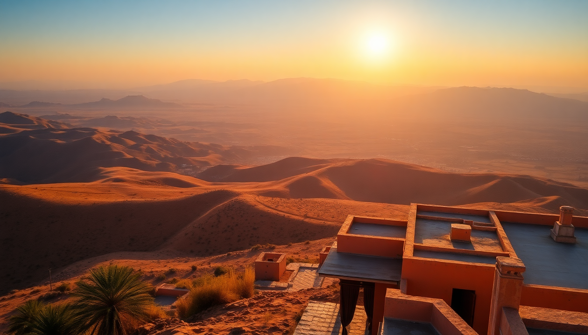

Getting Around Morocco: Trains, Buses & Car Rentals

I spent three weeks hopping between Marrakech, Fes, and Casablanca, and figuring out transport was the part I stressed about most before leaving. The good news: Morocco’s network is decent—if you know which tool fits which leg. Trains cover the spine, buses fill the gaps, and renting a car is best saved for the mountains or coast. Here’s exactly how each option worked for me.
Should you take the train in Morocco?
Yes, for the main corridor. The state-run ONCF runs trains between Casablanca, Rabat, Fes, Marrakech, and Tangier. They’re clean, reasonably punctual, and have AC that actually works—a big deal in summer.
I took the Al Boraq high-speed train from Casablanca to Tangier. It hits 320 km/h, takes just over two hours, and costs about 250 MAD ($25) for a standard-class ticket. Book ahead on the ONCF app or website; same-day tickets at the station often sell out for peak times.
- Marrakech to Casablanca: About 2.5 hours on a regular train. ~120 MAD first class.
- Casablanca to Fes: 4 hours direct. First class is worth the extra 30 MAD for quieter carriages.
- Fes to Marrakech: No direct train. You change in Casablanca or take the night train (couchettes available, but bring earplugs).
- Tangier to Fes: About 5 hours, with a change at Sidi Kacem.
First class means assigned seats and slightly less crowded compartments. Second class is fine for short hops but can get packed. I’d avoid the night train unless you’re on a tight budget—the beds are narrow and the air can get stuffy.
When does a bus make more sense than a train?
When the train doesn’t go there. CTM and Supratours are the two reliable bus operators. CTM runs modern coaches with AC, seatbelts, and a bathroom. Supratours is ONCF’s bus arm—their tickets can be bought at train stations and connect cities like Essaouira or Chefchaouen to the rail network.
I used CTM from Fes to Chefchaouen—about 4 hours, 75 MAD, and the bus was half-empty. The driver stopped once for a bathroom break at a café that served decent mint tea. Supratours from Marrakech to Essaouira took 3 hours, cost 85 MAD, and the scenery along the coast was a highlight.
- Book ahead: CTM lets you reserve online. Same-day tickets vanish on popular routes (Fes–Chefchaouen, Marrakech–Essaouira).
- Arrive early: Buses sometimes leave 10 minutes before the printed time. I missed one by 5 minutes.
- Don’t take the local buses (souq buses) unless you’re comfortable with no AC, no schedule, and goats on the roof. I tried it once from Meknes to Volubilis. It was cheap (15 MAD) but took twice as long.
Is renting a car in Morocco a good idea?
It depends on your nerves. I rented a car for three days to drive from Fes through the Middle Atlas to the Sahara. The roads were fine—paved, well-marked, and mostly empty. But driving in Marrakech or Casablanca? I’d rather ride a camel through a souq.
- Rental agencies: I used Hertz at Fes–Saïss Airport. Avoid the small local agencies in the medina—I heard stories of deposits never returned. International chains cost more but have transparent policies.
- Insurance: Get full coverage. The rental desk will push a “super cover” for about 150 MAD/day. I declined once and regretted it after a stray rock chipped the windshield. The company charged me 2,000 MAD.
- Navigation: Download Google Maps offline. Cellular data is cheap (I used an Orange SIM for 50 MAD with 10GB), but coverage drops in the mountains.
- Police checkpoints: Frequent and friendly. They’ll wave you through 90% of the time. Keep your license, passport, and rental papers handy.
Driving from Marrakech to the Ourika Valley took 45 minutes and was worth it for the views. Driving from Casablanca to Rabat on the A1 highway was easy—toll road, 60 MAD, no stress. But navigating the roundabouts in Casablanca near the Hassan II Mosque? Pure chaos. I’d skip driving in any city center.
What’s the best way to get from Casablanca Airport to the city?
The Casa Port train station is connected to the airport (CMN) via a direct shuttle train. It runs every hour, takes 30 minutes, and costs 40 MAD. I took it at 11 PM—clean, safe, and on time.
- Taxi from the airport: Expect 250–300 MAD to central Casablanca. Negotiate before you get in. The official taxi counter inside arrivals is fair.
- Petit taxi vs. grand taxi: Petit taxis (red in Casablanca, beige in Marrakech, blue in Fes) are for short city trips. Grand taxis are shared intercity vehicles—comfortable but you pay per seat. I shared a grand taxi from Fes to Meknes for 30 MAD per person.
How do you get around Marrakech, Fes, and Casablanca without a car?
Each city has its own rhythm. In Marrakech, I walked everywhere inside the medina. The Jemaa el-Fnaa square is a 15-minute walk from the Koutoubia Mosque. For longer distances, petit taxis are cheap—15–30 MAD for most rides.
In Fes, the medina is a maze. I hired a guide for 200 MAD for two hours to get my bearings. Outside the walls, petit taxis (blue) cost 10–20 MAD for short hops. I took one from the Blue Gate to the Royal Palace for 15 MAD.
In Casablanca, the Tramway is the best option. Two lines cover the city—line 1 runs from the Hassan II Mosque to the Casa Port station. A single ride is 6 MAD. I used it to get from my hotel near Place des Nations Unies to the Rick’s Café area in 20 minutes.
- Marrakech: Petit taxis are metered. Insist the driver turns it on.
- Fes: Avoid the “guides” at the Blue Gate who offer free tours—they’ll demand money later.
- Casablanca: The tram is faster than any taxi during rush hour (5–7 PM).
Are there any scams or pitfalls to watch out for?
A few, but they’re easy to dodge. In Marrakech, a taxi driver quoted me 100 MAD for a 5-minute ride. I laughed, he shrugged, and I found another driver who used the meter. In Fes, someone at the train station tried to sell me a “special tourist ticket” for double price—I walked to the official counter.
- Always confirm the price before getting in a grand taxi.
- Don’t let anyone carry your bags at the bus station unless you’re ready to tip 20 MAD.
- Buy train tickets from the ONCF app or official counter only—third-party sellers near the station mark up prices.
I also learned: keep small bills. Drivers and shopkeepers often “don’t have change” for a 200 MAD note.
FAQ
Do I need an international driving permit to rent a car in Morocco? Yes. Most rental agencies require an IDP along with your home country license. I got mine from AAA before the trip for $20. Some smaller agencies in Marrakech might wave it, but police checkpoints can ask for it.
How reliable is the ONCF app for booking trains? Very reliable. I booked all my trains through it—no issues with payment or seat selection. Just download the app in advance; it’s not available on the Apple App Store in some regions. You can also book via the website and show the QR code on your phone.
Is it safe to travel between cities at night? I’d avoid it. Roads outside major cities have no street lighting, and some stretches are winding (especially in the Rif Mountains). Buses and trains run until around 9 PM—plan to arrive before dark. I took the 6 PM CTM from Chefchaouen to Fes and got in at 10 PM, which felt fine because the bus was full.
Conclusion
- Trains (ONCF) are best for Casablanca–Fes–Marrakech–Tangier. Book first class online.
- Buses (CTM or Supratours) cover routes trains skip—Chefchaouen, Essaouira, Merzouga.
- Car rentals work for rural areas like the Atlas Mountains or Sahara, but avoid city driving.
- Petit taxis are cheap and fine for short distances—always negotiate or insist on the meter.
- Plan around the medinas: walking is faster than driving in Fes or Marrakech.